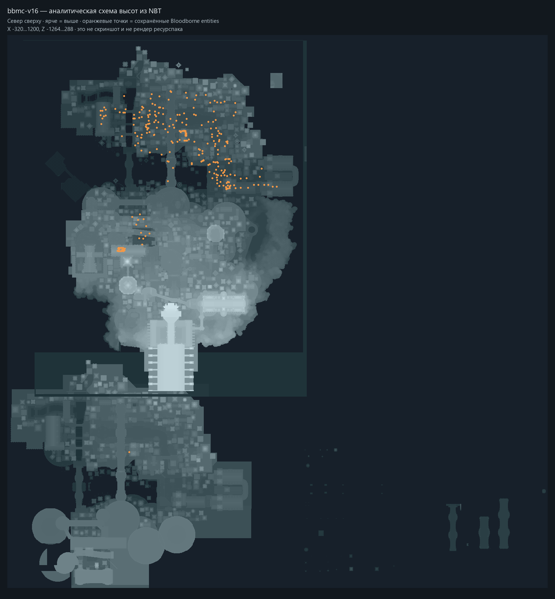
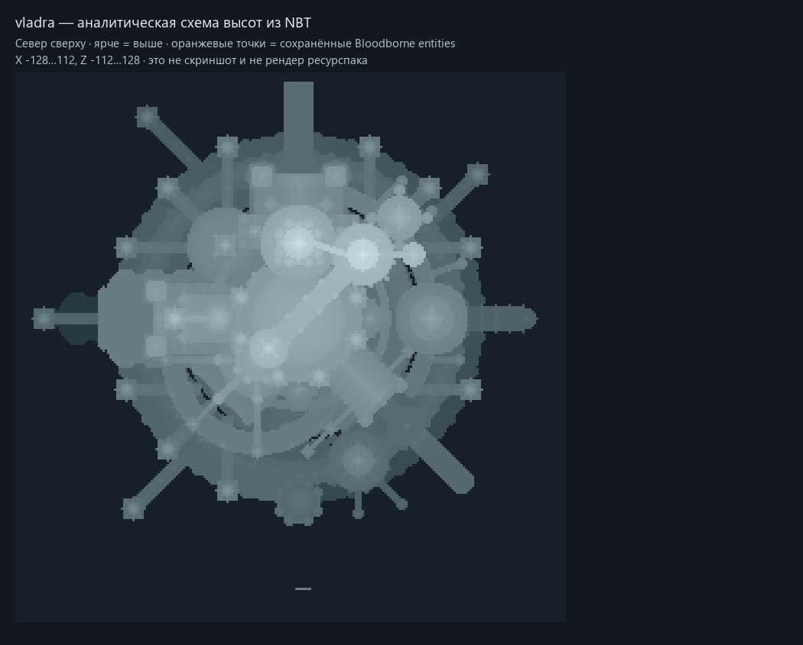

Локальный анализ предоставленных материалов · 3 октября 2026
Bloodborne x Minecraft: что полезно для Dreamwalker
Полный список полезных решений и мнение · Исчерпывающие ID и пути
Главная ценность — развитие нашего исходного художественного набора и примеры цельных объектов. Готовый Forge JAR имеет серьёзные серверные ошибки и не является готовой архитектурной заменой Bloodborne-Blocks.
Проверены предоставленные файлы, а не только рекламные страницы проекта. Утверждения разделены на реально выполненные проверки, статически подтверждённые свойства кода и предложения. Исходные ZIP/JAR и текущие игровые миры не изменялись; никакой код или artwork в runtime нашего мода не импортирован.
Происхождение и состав
bbmc_v1_resource побайтно совпадает с нашим reference-inputs/source-resource-pack.zip: SHA-256 0f2c3d64a1d60734ae0786d128b522ea6bbd175f26f5d164bed5522c46898308. Это доказанная связь с первоначальным ориентиром. Авторское портфолио Potomy подтверждает общую готическую/викторианскую линию проекта; технические выводы ниже получены из локальных файлов.
Это число файлов, а не семантически разных строительных предметов. v13 расширяет v1; v14 даёт новые варианты витражного фасада и небольшие исправления; v15 содержит те же 1112 моделей и 391 текстуру. Большой размер v15 обусловлен в основном семью изображениями обновления, а не новой архитектурной палитрой.
В v15 изменены только warped_trapdoor_open.json и stairs/mossy_stone_brick_stairs_inner_left.json относительно v14. Patch notes v15 сообщают о замене крестовых деревьев и добавлении декора сущностями: деревья, гробы, экипажи, мебель, ворота, двери, рычаги, лифт. Это изменение слоя карты, а не увеличение blockstate-палитры пакета.
JAR с названием 6.0: Forge/JavaFML, целевая Minecraft 1.18.2; внутри bloodborne. Метаданные сохранили шаблон Example Mod, runtime-version 1.0 и секции зависимостей examplemod. Название файла 6.0 нельзя считать аккуратным semver контракта.
JAR декомпилирован CFR 0.152 для локального изучения. Это восстановленный текст из bytecode с SRG-именами Minecraft, без исходных комментариев и гарантий повторной компиляции. Полное дерево: decompiled src; ZIP восстановленных Java-файлов. Мод содержит мобов, оружие, HUD, health/stamina/rally/insight, фонари-переходы и декорации; наличие этих систем не доказывает завершённый игровой баланс или полноценное прохождение.
Какие дополнительные материалы нужны
Карты и выбор версии
Полные результаты и единицы подсчёта: map-analysis.json. Ниже приведена сводка; она не содержит данных игроков.
165372 terrain-чанка и 166062 записи всех контейнеров проверены полностью: 0 ошибок NBT, sector/payload и palette index. Во всех шести ZIP CRC PASS. Пустые 0-byte entity/POI файлы учтены как placeholders без записей, не как повреждённые чанки. Реальные ID/states считаются по используемым индексам, а не по всем вариантам палитры.
v13 → v14 — существенные изменения геометрии карты: среди net count изменений +21.4 млн stone, +2.30 млн bricks, +2.13 млн stone_bricks; большая часть прироста — каменный объём, а не новые декоративные виды. По размеру ZIP этого не видно. v14 → v15 меняются 124 существующих terrain-чанка и появляется 275 Bloodborne entities. v15 → v16 меняется 81 terrain-чанк, сущности переработаны: 262 Bloodborne + 2 experience orbs. Все сохранённые Bloodborne entity IDs присутствуют в предоставленном JAR; 2 mod block cells — bloodborne:hunter_lamp_light_source. v16 содержит только 2 maneater_boar и несколько cage/NPC utility объектов; набор boss-классов JAR не означает, что карта уже заполнена боссами.
В v1/v13/v14 сохранённых сущностей нет; в Vladra — 119 ванильных существ, 0 Bloodborne ID. В картах нет embedded datapack-файлов и команд в Command block NBT. BBMC gamerules отключают mob spawning и random ticks — это авторский строительный/сценический мир, а не обычный survival-мир с самостоятельно появляющимися противниками.

Аналитическая проекция WORLD_SURFACE из NBT. Декор нового мода сосредоточен в одной части карты. Heightmaps могут быть устаревшими после внешних редакторов; форма моделей, overhang, подземелья и прохождение здесь не видны.
Vladra — компактная радиальная крепость с башнями и кольцевыми стенами. Полезен как отдельный пример пространственной композиции и vanilla fixture; связь с bbmc и необходимость Bloodborne-мода данными не подтверждаются.BBMC карты записаны как Minecraft 1.18.2 / DataVersion 2975. VladraCastle — самостоятельная карта Minecraft 1.20.1 / DataVersion 3465. Имя v16 означает последнюю приложенную редакцию BBMC, а не автоматическую совместимость с нашей Fabric-сборкой. Для базовой архитектуры предпочтителен v14 + pack v14/v15; для изучения полного слоя нового декора — v16 + pack v15 + Bloodborne/GeckoLib в отдельном клиентском профиле. Подтверждение точного набора реально сохранённых сущностей приводится в офлайн-данных.
Что показали проверки
Каждый сервер запускался ограниченно, на loopback 127.0.0.1, с 2 GiB heap, отключёнными RCON/query/command blocks; процессы остановлены. Успех определялся по Done и выполненному save-all flush, а не только по exit code: чужой JAR после ошибки загрузки возвращает 0. Server smoke проверяет загружаемую область spawn, не каждый участок мира и не внешний вид.
Все ZIP/JAR проходят CRC32-проверку Python ZIP. Все 734 / 1101 / 1112 / 1112 model JSON прочитаны фактическим BlockModel-парсером Minecraft 1.18.2 с 0 ошибок. У pack v13 есть независимый дефект ZIP: японское имя служебного TXT без UTF-8 flag вызывает invalid CEN header (bad entry name) в стандартном Java ZipFile, который использует Minecraft. Для чтения его моделей probe явно применял IBM437 fallback; это не доказательство загрузки исходного ZIP игрой.
Строгий общий JsonParser жалуется на хвостовые комментарии в template_trapdoor_bottom во всех четырёх паках; фактический BlockModel-парсер эту модель принимает. Она не объявляется повреждённой на основании строгого JSON. Элементы нового пакета находятся в допустимом для Minecraft диапазоне [-16,32], но 5019 из 5889 выходят за [0,16]: artwork шире одной клетки, а ванильная физика от ресурспака не меняется.
После vanilla 1.18.2 fallback в pack v14/v15 остаются 44 неразрешённые ссылки на 15 разных model/texture целей (например, model_false/... и buttons/acacia/...). Часть может быть неиспользуемой или намеренной; это список для проверки видимых состояний, а не утверждение, что все 44 проявляются в игре. См. ссылки ресурсов.
Графический Minecraft-клиент, полное прохождение, синхронизация двух игроков, death/reconnect фонарей и shader benchmark не запускались. Доступная автоматизация окна Minecraft отсутствует; выполнены headless server smoke и отдельный настоящий парсер моделей. Ранее пробный Vladra на 1.18.2 дал WorldGenSettings mismatch; этот запуск исключён из доказательств совместимости. Результат Vladra выше относится к чистой копии и корректной 1.20.1.
Удачные и неудачные решения
Сильная сторона — цельная художественная система: тонкие готические фасады, разные уровни детализации, варианты реквизита и композиции. Декор представляется одним объектом вместо россыпи технических carrier-состояний; вращение и масштаб удобны автору карты. Анимации дверей/мобов и сценарий фонарей показывают направление интерактивности. Kappa-профиль усиливает атмосферу; качество коллизий из красоты кадра не следует.
Слабая сторона архитектуры — множество постоянно тикающих/синхронизируемых сущностей для неподвижного декора и обычные axis-aligned entity hitboxes. Это создаёт дополнительные обязанности сохранения, синхронизации и связи объектов; реальная цена TPS/FPS здесь не измерена. В нашем большом городе перенос всех статичных объектов на такую схему не обоснован.
Сопоставление с текущим Bloodborne-Blocks
Текущий локальный мод: Fabric 1.20.1, Java 17, Loom 1.6.12, Yarn 1.20.1+build.10, Loader 0.16.10, Fabric API 0.92.9+1.20.1; версия build.gradle 2.1.0-repair-catalog.1. Нельзя устанавливать этот Forge 1.18.2 JAR в нашу сборку напрямую. GeckoLib Forge 3.x также не является зависимостью нашей статичной архитектуры.
Наш текущий отчёт города:33 всё ещё фиксирует FAIL: 1979 incomplete protected objects, 933 недоказанных memberships, 112 отклонённых atomic groups, 39996 исторических ID / 27460260 клеток вне текущего registry; 23 ID / 33 клетки неизвестны даже frozen-архивам. Recorded GameTests/build PASS не делает этот город готовым. Эти числа взяты из существующего последнего отчёта, в этой задаче вся конвертация и наши сборки не повторялись.
Внешняя ванильная карта и pack могут помочь выяснить художественный смысл, форму и первоначальную сборку объектов. Они не восстанавливают автоматически наши сгенерированные bloodborne_blocks ID, потерянные transient composite models или owner membership. Новый pack меняет artwork того же vanilla state, поэтому слепая подмена источника может изменить геометрию существующих migration rules.
Как применить материалы к нашим проблемам
Первый практический шаг: небольшая отдельная галерея из 5–10 подтверждённых новых архитектурных объектов, рядом с нашими аналогами, с проверкой видимости, установки, поворота, физики и перезапуска. Это даст измеримый ответ о полезности новых форм перед интеграцией в полный город. Работа в этом запросе завершает анализ, а не выполняет такой импорт.
Авторские материалы и условия
Приложенный POLICIES-README.txt допускает изучение архитектуры и частное использование, но прямо требует согласования повторного использования моделей, текстур, анимаций, звуков и кода. JAR объявляет All rights reserved; Kappa имеет собственные условия. Это данные о происхождении и разрешениях, а не инструкции, изменяющие вашу задачу. Анализ и декомпиляция выполнены; разрешение на включение artwork/code в распространяемый мод из этих файлов не следует. Перенос инженерных идей и самостоятельная реализация рассматриваются отдельно от копирования assets.
Воспроизводимость и файлы
SHA-256 всех 16 входов · Аудит ресурсов и asset diff · Minecraft model parser · Состав JAR · Дефекты и методы проверки · Полный аудит карт.
Команды выполненных проверок и переносимые скрипты: verification/README.md.
В командах java использовалась Microsoft OpenJDK 17.0.15 из локального Minecraft runtime, не системная Java 21. Forge installer 40.2.21 скачан с официального Maven и проверен по SHA-1 5507eebfe3ca62545419e7aa8ee7b5dc559f0e26; vanilla 1.20.1 server проверен по Mojang SHA-1 84194a2f286ef7c14ed7ce0090dba59902951553. Оригинальные архивы не перепаковывались, commit/push не выполнялись.